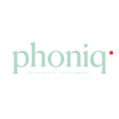

Phoniq is creating a new data layer for the planet. One that lets technology listen, learn, and respond to life itself.
Our AI platform transforms natural signals into insight, connecting biology, ecology, and industry through a shared language of data.
From oceans to farmland, we translate movement, sound, and environmental patterns into understanding, helping humans make decisions that strengthen, rather than silence, the living world.
Because intelligence begins with listening.
Acoustic monitoring is backed by peer-reviewed research demonstrating clear links between soundscapes, ecosystem health, and aquaculture performance.
Built by scientists, engineers, and storytellers who believe that technology should listen before it acts.
Skage Grønneberg & Torleif Markussen Lunde
Skage brings strong commercial expertise. He holds a degree in economics, spent several years at Handelsbanken Capital Markets, and has run his own real estate company since 2010. He also studied natural resource management at NMBU in Ås and served as head of the business division at Bellona. Together, they cover the technical, commercial, and strategic execution needed to build Phoniq.
Torleif, former CPO at StormGeo, holds a PhD and brings broad experience across technology, artificial intelligence, product development, innovation management, and building and scaling startups internationally.
We transform natural signals into actionable insight — helping you monitor welfare, optimize operations, and meet regulatory requirements.
For fish farmers and aquaculture operations
Our hydrophone systems continuously monitor fish vocalizations, feeding sounds, and equipment performance — giving you real-time insight into welfare and operational health.
What you get: Early detection of stress and illness, optimized feeding schedules, equipment fault alerts, and automated compliance reporting for welfare regulations. All from a single low-power system that works 24/7 in any water conditions.
For coastal restoration and blue-carbon projects
Track biodiversity recovery and ecosystem health through underwater acoustic monitoring of kelp forests and marine habitats.
What you get: Continuous biodiversity metrics for carbon credit verification, restoration progress tracking, and environmental impact assessments without divers or cameras.
Expanding to forests, farms, and cities
The same technology that monitors fish welfare can track forest health, barn conditions, and urban biodiversity.
Our vision: Building a universal platform for human-nature communication across all ecosystems.
Technical white papers on acoustic monitoring, ecosystem health, and aquaculture performance — backed by peer-reviewed research and real operational data.
We're partnering with early customers in ocean and land-based industries. If you want to help build the communication layer for nature, reach out.
Get In Touch